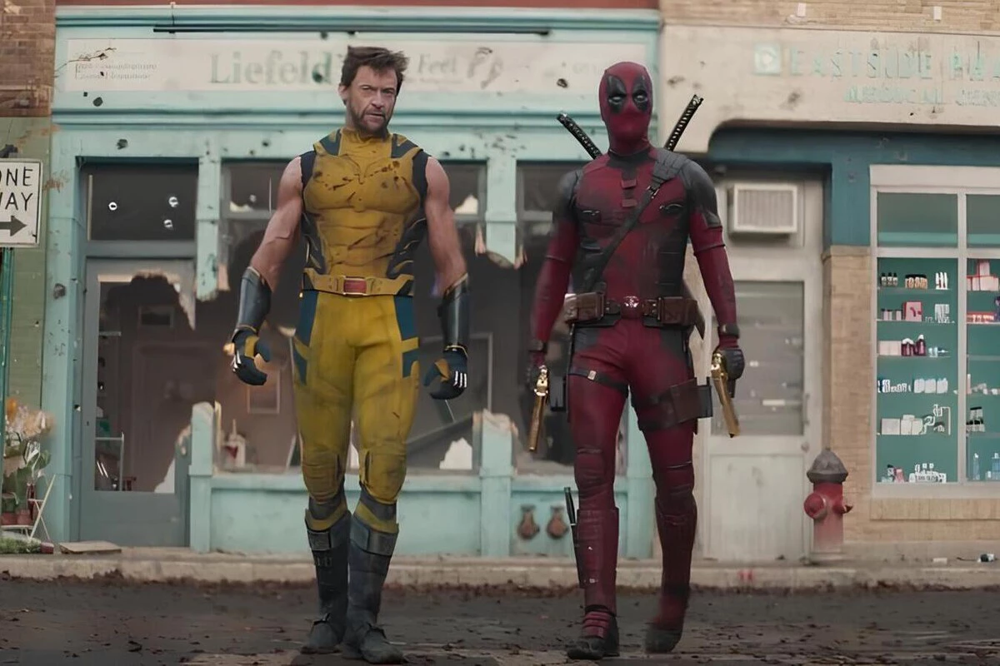
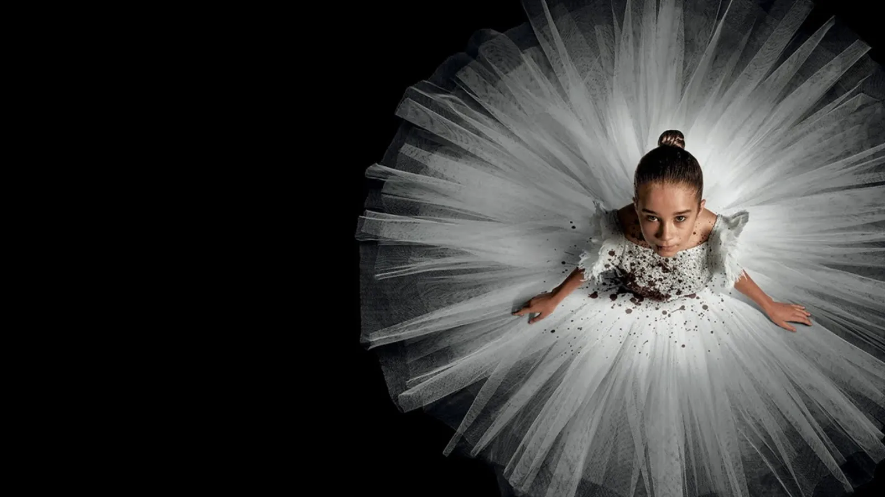

NOVEDADES
¡Ya tenemos un nuevo trailer de DEADPOOL 3!
Martes, 23 de abril de 2024
Marvel Studios acaba de dibujarle una sonrisa al lunes con el lanzamiento de un nuevo avance de la esperada Deadpool & Wolverine. A diferencia del tráiler que pudimos ver en febrero pasado, este segundo audiovisual presenta por primera vez al personaje de Hugh Jackman como coprotagonista junto al mercenario de Ryan Reynolds, en lo que parece ser la buddy movie (película de amigos) que el público estuvo esperando por años.
Este clip nos revela a Deadpool tratando de darle la vuelta al ceño fruncido de un Wolverine al que el mundo le ha dado la espalda. Y si bien hacer equipo con el más famoso de los X-Men no parece ser una tarea fácil, las secuencias siguientes musicalizadas con Like a Prayer de Madonna aseguran acción, bromas mordaces y muchísimos guiños para los aficionados.
Todavía no hay señales del presunto cameo de Taylor Swift ni de otras figuras rumoradas. Sin embargo, este nuevo material promocional de la película si nos confirma que Emma Corrin no solo será la villana del filme, sino que se pondrá en la piel de Cassandra Nova, la hermana de Charles Xavier. Como última frutilla del postre, también se nos muestran los portales asociados a Doctor Strange en la conclusión del tráiler, algo que la mayoría de la gente no se habría esperado.
Además de Hugh Jackman retomando su icónico papel de Wolverine, en lo que significará su debut en el UCM (Universo Cinematográfico de Marvel), y el regreso de Reynolds como el irreverente mercenario, la película contará con un reparto estelar. Entre las figuras confirmadas se encuentran Matthew Macfadyen (Succession), Morena Baccarin (Serenity), Stefan Kapicic (Deadpool) y Jennifer Garner (Elektra).
Detrás de cámaras, Reynolds repite su rol como productor ejecutivo mientras que su colaborador recurrente, Shawn Levy, fue quien asumió el rol como director. Previamente, la dupla trabajó en las películas Free Guy: Perdiendo el control (Free Guy, 2021) y El proyecto Adam (The Adam Project, 2022).
Deadpool & Wolverine llegará a las salas de Latinoamérica el próximo 25 de julio.
Abigail: La nueva película de vampiros ya se encuentra en cines
Viernes, 19 de abril de 2024
Abigail ya está en salas de cine. La película de Matt Bettinelli-Olpin y Tyler Gillett, también directores de Boda sangrienta, Heredero del diablo, Scream 6 y 5, entre otras, ha causado opiniones dispares, así que te compartimos todo lo que sabemos al momento para que puedas crear tu propio criterio en torno a la polémica.
Abigail cuenta la historia de un intento de secuestro de una pequeña niña, llamada Abigail, para obtener una significativa cantidad de dinero por parte de su millonario padre, a cambio de su liberación. Sin embargo, el plan se sale de control cuando descubren que la pequeña tiene poderes sobrenaturales y es, en realidad, una mujer vampiro que no parará hasta cobrar venganza y acabar con todos los que intentaron dañarla (y también con quienes no).
Los secuestradores, que no se conocen entre ellos, tienen diversas profesiones como conductor, francotirador, médica, peleador, hacker y jefe de la operación, pero ninguno de ellos sospecha que en este plan de secuestro están adentrándose en el momento más sangriento de su vida, en manos de una pequeña bailarina de ballet.
La trama presenta una figura sumamente aprovechada en el cine de terror y suspenso: los vampiros. Sin embargo, le da un giro novedoso al encarnarlo en una inocente bailarina de ballet, que incluso cuando muestra su lado más perverso, mantiene su compromiso con la danza. Este es el primer factor que ha provocado sensaciones encontradas en la audiencia de la película, que califican esa combinación de una bailarina de ballet con un vampiro un tanto inverosímil. Sin embargo, para Matt Bettinelli-Olpin este fue uno de los motores clave para realizar la cinta. En sus palabras, "Lo que nos llamó la atención desde el principio era hacer una película de robos, poner a estos personajes -que son profesionales y quieren hacer su trabajo- en esta situación surrealista, con un vampiro bailarín persiguiéndoles. Algo nos hizo clic al encontrar ese tono".
Por su parte, otro de los elementos que han causado polémica sobre la cinta es el excesivo uso de sangre, que los mismos directores reconocieron como una de las películas más sangrientas que han hecho, en la que los personajes están cubiertos de sangre durante la mitad de la película. De hecho, llenaron una alberca con sangre falsa y trozos de cuerpo de silicona. En su defensa, Matt Bettinelli-Olpin dijo “Es verdad que es la película más sangrienta en la que hemos trabajado, pero es una película de vampiros, ¿qué podíamos hacer?”
En un sentido positivo, se reconoce el trabajo de Alisha Weir como actriz principal, ya que a sus 14 años fue capaz de dar vida a un personaje dual, que se muestra tanto como una niña inocente, como una máquina de matar. Además, se reconoce que si ese papel no tenía una buena actuación, la película podría fácilmente caer en lo absurdo.
Lo más importante al momento de decidir si ver o no Abigail, es recordar el tipo de cine que Matt Bettinelli-Olpin y Tyler Gillett han hecho e identificar que, aunque mezclan terror y suspenso, se trata de películas fundamentalmente cómicas, tan violentas que rozan el absurdo y que buscan generar incomodidad en los espectadores. Así que si quieres disfrutar de esta cinta, te recomendamos que vayas con la mente abierta y que no te tomes tan en serio lo que ves en pantalla.
Disney ficha a los guionistas de ‘Misión imposible: Protocolo fantasma’ para la película de Space Mountain
Jueves, 18 de abril de 2024
Después de un prolongado silencio, se han revelado nuevas actualizaciones sobre uno de los proyectos más enigmáticos de Disney: la adaptación cinematográfica de la popular atracción Space Mountain. En esta ocasión, se han dado a conocer los nombres de los guionistas encargados de llevar a cabo esta tarea.
La compañía ha anunciado que Josh Appelbaum y André Nemec serán los responsables del guión de esta película live-action. El dúo, reconocido por su trayectoria conjunta, previamente trabajó en la serie de acción Citadel, la cual contó con Richard Madden (Game of Thrones) y Priyanka Chopra (Guardianes de la bahía) como protagonistas. Además, han ejercido como showrunners de Cowboy Bebop (2021) y son los escritores de Misión Imposible: Protocolo Fantasma (Mission: Impossible - Ghost Protocol, 2011), una de las entregas más aclamadas de la franquicia protagonizada por Tom Cruise.
En cuanto a la trama de esta adaptación, el misterio persiste. La atracción Space Mountain, conocida por su montaña rusa cubierta, carece de una narrativa o personajes específicos que puedan trasladarse directamente a la gran pantalla. No obstante, esta ausencia también brinda una libertad creativa considerable para los guionistas, en contraste con otras atracciones de Disneyland que han sido adaptadas al cine, como Piratas del Caribe o Tomorrowland: El mundo del mañana (Tomorrowland - 2015).
Space Mountain se inauguró en el Walt Disney World Resort de Florida en 1975, y dos años después, en 1977, se expandió a Disneyland de California. Desde entonces, ha sido una atracción emblemática en todos los parques de Disney alrededor del mundo.
A pesar del secretismo que rodea el proyecto, se confirma que la producción sigue en marcha. Se espera con interés nuevas actualizaciones por parte de la compañía, mientras aguardamos por conocer más detalles sobre esta intrigante adaptación cinematográfica.